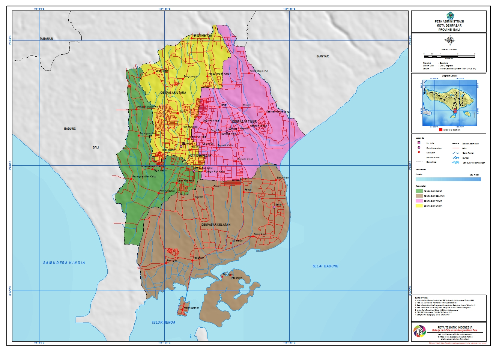

Sejarah
Denpasar, sebagai ibukota dari Provinsi Bali tentu banyak dikenal oleh masyarakat. Terlebih lagi, kota
tersebut terletak di Pulau Bali yang merupakan destinasi wisata dunia. Namun hingga kini tidak banyak orang
yang mengetahui betul bagaimana sejarah terbentuknya Kota Denpasar hingga seperti sekarang.
Dalam sejarahnya, Denpasar adalah sebuah taman. Namun taman tersebut tidak seperti taman pada umumnya, karena
merupakan taman kesayangan dari Raja badung pada waktu itu, Kyai Jambe Ksatrya. Pada waktu itu, Kyai Jambe
Ksatrya tinggal di Puri Jambe Ksatrya, yang kini menjadi Pasar Satria. Taman ini unik, karena dilengkapi
dengan tempat untuk bermain adu ayam. Hobi Kyai Jambe Ksatrya adalah bermain adu ayam, oleh karena itu tidak
jarang sang raja mengundang raja-raja lainnya di Bali untuk bermain adu ayam di taman tersebut.
“Jika dibandingkan dengan sekarang, taman tersebut semacam villa persitirahatan”, ujar AA Ngurah Putra
Darmanuraga, penekun sejarah sekaligus tokoh di Puri Pemecutan.
Nama denpasar sendiri terdiri dari dua kata yaitu “den” yang berarti
utara dan “pasar” yang berarti pasar. Nama ini diberikan pada taman
tersebut mengingat lokasinya yang terletak di utara pasar. Kini
taman tersebut menjadi Jaya Sabha, rumah jabatan untuk Gubernur
Bali. Secara administratif, Kota Denpasar diresmikan sebagai sebuah
kota pada tahun 1788. Pembentukan kota ini mengalami proses yang
panjang, bahkan sejak Pulau Bali masih ditinggali oleh
kerajaan-kerajaan.
Geografis

Kota Denpasar berada pada ketinggian 0-75 meter dari permukaan laut,
terletak pada posisi 8°35’31” sampai 8°44’49” Lintang Selatan dan
115°00’23” sampai 115°16’27” Bujur Timur. Sementara luas wilayah
Kota Denpasar 127,78 km² atau 2,18% dari luas wilayah Provinsi Bali.
Kota Denpasar terdiri dar 4 kecamatan yaitu :
- Denpasar Utara
- Denpasar Timur
- Denpasar Selatan
- Denpasar Barat
Wisata
Kota Denpasar dikenal dengan kota dengan potensi wisata budaya
berbasis kearifan lokal dengan 4P 1M yaitu Pura, Puri, Pantai, Pasar
dan Museum
Taman Kumbasari
Taman kumbasari yang terletak di jalan Gajah Mada Denpasar selalu
menjadi salah satu kunjungan wisata anak muda jaman sekarang.
Taman Kumbasari berada di antara dua pasar yaitu Pasar Seni
Kumbasari dan Pasar Badung. Dulunya sungai Kumbasari dikenal
dengan salah satu sungai yang kumuh, tetapi pada 2017 lalu diubah
menjadi sungai yang tertata rapi dan dijadikan sebagai taman
rekreasi. Taman Kumbasari yang lebih dikenal sebagai Tukad Korea
ini memiliki konsep seperti sungai Cheonggyecheon yang ada di
Seoul Korea Selatan. Tak mengherankan banyaknya masyarakat yang
berkunjung ke taman ini untuk bersantai dan menikmati keindahan
sungai dengan berbagai spot foto yang instagramable. Mengusung
konsep river walk, taman ini ditata dengan jalan yang
berkelok-kelok dan berundak sepanjang 548 meter. Taman ini juga
dilengkapi dengan jembatan apung, ornamen batu-batu yang disusun
apik, kursi yang disusun berwarna-warni, serta air mancur yang
berada di sisi kanan dan kiri sungai membuat wisatawan seperti
berkunjung ke Korea Selatan.
Taman Puputan Badung
Taman Puputan Badung atau lebih dikenal sebagai Lapangan Puputan
Badung memiliki nilai sejarah yang sangat tinggi, hal ini terkait
dengan Perang Puputan Badung, yang terjadi pada tanggal 20
September 1906. Saat itu rakyat Bali berperang sampai titik darah
penghabisan melawan tentara Belanda, lebih baik mati berkalang
tanah daripada hidup dijajah, yang dikenal dengan istilah
"Puputan" dan selalu diperingati setiap tahunnya. Sebuah monumen
"Monumen Puputan Badung" dibangun di tempat ini, menggambarkan
semangat para pejuang Bali saat itu walaupun hanya bersenjatakan
'keris dan bambu runcing', mereka pantang menyerah. Taman Puputan
Badung yang kini bernama Lapangan I Gusti Ngurah Made Agung
terletak di pusat kota, tempat ini sering dijadikan sebagai tempat
berekreasi masyarakat lokal setiap sore hari, khususnya pada hari
libur dan setiap hari Minggu sore dipentaskan kegiatan seni dan
budaya untuk anak-anak dan masyarakat umum. Demikian pula umat
Hindu biasa menggunakan tempat ini untuk melaksanakan kegiatan
keagamaan seperti Tawur Agung Kesanga, Hari Raya saraswati dan
lain-lain.